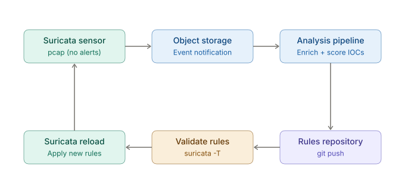

A GitOps Architecture for ML-Driven Suricata Rule Generation
Last year I gave a talk on an ArgoCD-controlled network sensor that used GitOps to deploy Suricata rules onto sensors running k3s. That project demonstrated that treating IDS rules as declarative, version-controlled configuration works well in practice; ArgoCD would detect drift in the rules repository and reconcile the sensor's state automatically. Unfortunately, we didn't end up using the k3s-based sensors for our community partners.
However, I needed to get this idea about a GitOps architecture for ML-driven Suricata rule generation down somewhere. This post is supposed to be documentation of this idea. Instead of a human analyst writing rules and pushing them to Git, what if a machine learning pipeline did it?
Architecture Overview
The system described here is a closed-loop threat detection architecture where an ML pipeline generates Suricata IPS rules and delivers them to a sensor through GitOps principles. The design is cloud-agnostic; the pipeline requires object storage, a serverless compute trigger, and a secrets manager, all of which have equivalents across major cloud providers.
The system consists of three components forming a feedback loop.
The sensor is an on-premise device running Suricata in inline IPS mode with two network interfaces. Packet captures that did not produce any Suricata alerts are uploaded to cloud object storage. The premise is straightforward: traffic that evades existing signatures is the most valuable input for generating new ones.
The analysis pipeline is triggered when a new pcap arrives in object storage. A serverless function or container task downloads the capture, extracts indicators of compromise (IP addresses, domain names, DNS queries, HTTP hosts and URIs, file hashes), and enriches them against threat intelligence feeds such as VirusTotal or AbuseIPDB. If the aggregate threat score exceeds a configurable threshold, the pipeline generates a syntactically valid Suricata rule and commits it to a private Git repository.
The sync loop runs on the sensor as a scheduled job. In the k3s deployment, ArgoCD handled this reconciliation natively. For a standalone mini PC without Kubernetes, a shell script serves the same role: it pulls from the rules repository, validates incoming rules using Suricata's built-in test mode (suricata -T), and reloads the engine on success. On validation failure, the script rolls back to the last known-good ruleset automatically. Critically, all auto-generated rules use the alert action rather than drop or reject. In inline IPS mode, an incorrect drop rule does not merely produce a false positive; it silently discards legitimate traffic. Promotion from alert to drop should occur only after a defined soak period and human review.
Why GitOps?
The k3s project already proved the core value here. Treating the rule repository as the single source of truth provides properties that are difficult to achieve with ad-hoc rule distribution.
Every rule change is a commit carrying metadata: the originating IOC, the confidence score, the enrichment source, and a timestamp. This gives operators a full audit trail and the ability to revert a problematic rule with git revert rather than manual intervention on the sensor. Branch protection prevents force-pushes to the main branch, and CI validation can gate merges on syntax checks.
The infrastructure itself is declared in OpenTofu across a separate repository, maintaining separation of concerns between what the sensor enforces and how the supporting infrastructure is provisioned.
The Feedback Loop

The sensor detects what its current ruleset covers. Unmatched traffic is forwarded to the pipeline for a second opinion. When the pipeline identifies a new threat, it teaches the sensor to recognize it. The loop closes, and the sensor's coverage grows over time without manual rule authoring.
The key constraint throughout is safety. Inline IPS mode demands that every automated change to the ruleset is validated, auditable, and conservative by default. GitOps provides the mechanism; the alert-before-drop policy provides the guard rail.